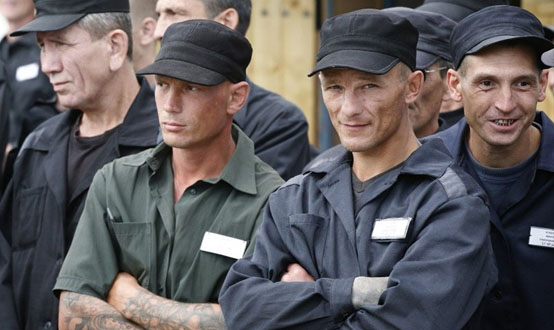

Понятие преступления
Термин «преступление» используется для обозначения наиболее опасного вида правонарушений – уголовно-наказуемых деяний.
ЦИТАТА
Законодательство в ст. 14 УК РФ определяет преступление как виновно совершенное общественно опасное деяние, запрещенное Уголовным кодексом под угрозой наказания.
Деяние возможно в форме действия или бездействия. Действием считается активная совокупность движений или отдельного движения. Начальным моментом преступного действия в умышленных преступлениях является телодвижение, направленное на создание условий для совершения преступления. Началом преступных действий в неосторожных преступлениях является тот момент, когда возникла угроза причинения вреда или вред начинается причиняться объекту. Конечным моментом действия считается наступление преступного результата или выполнение последнего акта телодвижений, совокупность которых образует действие в целом.
В отличие от преступного действия, преступное бездействие – это пассивная форма поведения, т.е. состояние физического покоя, при котором лицо не совершает того действия, которое оно должно и могло бы выполнить.
Для преступного бездействия необходимо, чтобы лицо было обязано действовать и имело возможность в данной обстановке совершить требуемое действие. Такая обязанность может исходить из профессиональных или служебных функций. Например, ч. 1 ст. 124 УК РФ: «Неоказание помощи больному без уважительных причин лицом, обязанным ее оказывать в соответствии с законом или со специальным правилом, если это повлекло по неосторожности причинение средней тяжести вреда здоровью больного». Для привлечения к уголовной ответственности за преступное бездействие следует установить обстоятельства, с помощью которых возможно установить его начальный и конечный моменты. К ним относятся: а) обязанность лица выполнить определенное действие; б) возможность совершить его в данных условиях; в) невыполнение лицом тех действий, которые от него требуются.
Признаки преступления
Определение преступления включает четыре ключевых признака преступления:
1) общественная опасность. Этот признак качественно отличает преступление от иных видов правонарушений и выступает в качестве основной (материальной) предпосылки для уголовно-правового запрета данного вида деяний. Непосредственным проявлением общественной опасности является вред, который причиняется или реально может быть причинен личности, обществу или государству.
Общественная опасность имеет качественную и количественную оценки. Качественная — это характер общественной опасности, который определяется прежде всего ценностью объекта (посягательство на жизнь по характеру опаснее посягательства на имущество). Характер общественной опасности деяния предопределяет его место в системе Особенной части УК, так как ее разделы, главы выделены в соответствии с рассматриваемым признаком. Можно сказать, что по этому свойству общественной опасности выделяют виды преступлений.
Количественная оценка общественной опасности — это ее степень, в соответствии с которой отдельные преступления дифференцируются внутри вида. Например, кража велосипеда и кража автомобиля по характеру схожи, однако по степени общественной опасности различны. Следовательно, степень общественной опасности может зависеть от размера последствий, мотива, цели и других обстоятельств совершения преступления;
2) противоправность. Как бы ни было опасно какое-либо деяние, но, если оно не предусмотрено уголовным законом на момент его совершения, оно не может быть признано преступлением. Верно и обратное утверждение: если предусмотренное УК РФ деяние не обладает общественной опасностью, то оно не может быть признано преступлением. Данный признак проявляется, исходя из особенностей уголовного законодательства, в том, что устанавливается запрет на совершение конкретных действий либо налагаются определенные обязательства на тех или иных лиц;
3) виновность. Этот признак является производным от противоправности. Деяние, т.е. активное или пассивное поведение, может быть признано преступным лишь тогда, когда оно совершено виновно, т.е. умышленно или неосторожно. Установлена недопустимость привлечения к уголовной ответственности без наличия вины. В этой связи преступлением является не всякое общественно опасное деяние, предусмотренное уголовным законодательством, а лишь то, которое характеризуется определенным психическим отношением лица к самому поведению и наступившим последствиям;
4) наказуемость. Этот признак также базируется на противоправности. Уголовно-правовая сущность его заключается в том, что нет в УК РФ преступления, за которое не было бы предусмотрено наказания. Причем он выступает не в виде неизбежности наступления данных неблагоприятных последствий, а в виде реальной угрозы применения наказания. Включение этого признака в понятие преступления не означает, что лицу, совершившему преступление, обязательно будет назначено наказание. Уголовное законодательство предусматривает ряд обстоятельств, которые дают возможность освободить лицо от уголовной ответственности и от наказания (см. ст. 75—85).